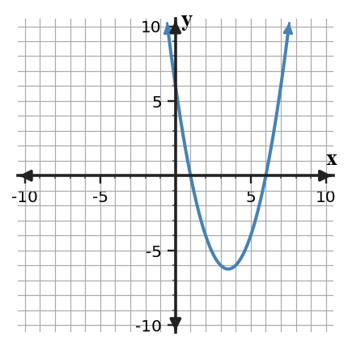

Factor $x^2+9x+20$.
Factor $x^2+9x+20$.
Find two numbers that multiply to $20$ and add to $9$: $4$ and $5$.
$x^2+9x+20=(x+4)(x+5)$.
Factor $2x^2-5x-12$.
Factor $2x^2-5x-12$.
Use product-sum: $a c=2(-12)=-24$ and the needed sum is $-5$, so use $-8$ and $3$.
$2x^2-8x+3x-12=2x(x-4)+3(x-4)=(2x+3)(x-4)$.
Solve or interpret the quadratic situation for Solving Quadratics by Factoring. Show the algebra that supports your answer.
The graph shows a quadratic. Estimate the zeros, then write a possible factored equation.

Solve or interpret the quadratic situation for Solving Quadratics by Factoring. Show the algebra that supports your answer.
The graph shows a quadratic. Estimate the zeros, then write a possible factored equation.
From the graph, the zeros are approximately $x=1$ and $x=6$.
A possible factored equation is $y=(x-1)(x-6)$. If the graph opens upward with the same apparent width as $y=x^2$, this model is reasonable.
Two-Method Analysis. Analyze the quadratic evidence for Solving Quadratics by Factoring. Write a conclusion and justify it with algebraic or graphical evidence.
Solve $x^2-8x+7=0$ two ways. Then explain which method is more efficient and why.

Two-Method Analysis. Analyze the quadratic evidence for Solving Quadratics by Factoring. Write a conclusion and justify it with algebraic or graphical evidence.
Solve $x^2-8x+7=0$ two ways. Then explain which method is more efficient and why.
Factoring: $x^2-8x+7=(x-1)(x-7)$, so $x=1$ or $x=7$.
Quadratic formula: $x=\frac{8\pm\sqrt{64-28}}{2}=\frac{8\pm 6}{2}$, so $x=1$ or $x=7$.
Factoring is more efficient because the trinomial factors quickly into integer factors.
A table multiplies by $3$ each time the input increases by $1$. Name the most likely family and the evidence.
A table multiplies by $3$ each time the input increases by $1$. Name the most likely family and the evidence.
The family is exponential because equal input steps multiply outputs by a common factor.
The evidence is the constant ratio of $3$.
An equation has the form $y=m x+b$ with $m\ne 0$. Name the family and one graph feature to expect.
An equation has the form $y=m x+b$ with $m\ne 0$. Name the family and one graph feature to expect.
This is a linear family. Its graph is a straight line with slope $m$ and $y$-intercept $b$.
Classify the family for the table and describe its symmetry evidence.
| $x$ | -2 | -1 | 0 | 1 | 2 |
|---|---|---|---|---|---|
| $y$ | 5 | 2 | 1 | 2 | 5 |
Classify the family for the table and describe its symmetry evidence.
| $x$ | -2 | -1 | 0 | 1 | 2 |
|---|---|---|---|---|---|
| $y$ | 5 | 2 | 1 | 2 | 5 |
The $y$-values $5,2,1,2,5$ mirror around $x=0$.
This suggests a quadratic or absolute-value relationship; with values growing like squares from the center, a quadratic model such as $y=x^2+1$ fits.
The equation $y=2(1.5)^x$ and a context about repeated percent growth are paired. Build a four-value table and explain why the equation and context support the same family.
The equation $y=2(1.5)^x$ and a context about repeated percent growth are paired. Build a four-value table and explain why the equation and context support the same family.
A four-value table for $x=0,1,2,3$ is $2,3,4.5,6.75$.
Each step multiplies by $1.5$, so the equation and repeated percent growth context both support an exponential family.
Use the graph set and the evidence cards below. Match each evidence card to a graph, then identify the family. For each match, cite the evidence you used; do not use graph shape alone.
| Evidence card | Given evidence |
|---|---|
| 1 | For equal input steps, the outputs change by the same amount each time. |
| 2 | Outputs mirror across one input value and have constant second differences. |
| 3 | Outputs decrease to a single turning point and then increase at a constant rate away from that point. |
| 4 | After accounting for a vertical shift, equal input steps multiply the output pattern by a common factor. |

Use the graph set and the evidence cards below. Match each evidence card to a graph, then identify the family. For each match, cite the evidence you used; do not use graph shape alone.
| Evidence card | Given evidence |
|---|---|
| 1 | For equal input steps, the outputs change by the same amount each time. |
| 2 | Outputs mirror across one input value and have constant second differences. |
| 3 | Outputs decrease to a single turning point and then increase at a constant rate away from that point. |
| 4 | After accounting for a vertical shift, equal input steps multiply the output pattern by a common factor. |
Constant second differences suggest a quadratic function family.
Two students classify a relationship. Student A uses the equation $y=(x-1)^2+4$. Student B uses the table below. Explain two different methods that should lead to the same family classification.
| $x$ | 0 | 1 | 2 | 3 |
|---|---|---|---|---|
| $y$ | 5 | 4 | 5 | 8 |
Two students classify a relationship. Student A uses the equation $y=(x-1)^2+4$. Student B uses the table below. Explain two different methods that should lead to the same family classification.
| $x$ | 0 | 1 | 2 | 3 |
|---|---|---|---|---|
| $y$ | 5 | 4 | 5 | 8 |
The equation is vertex form for a quadratic, so Student A should classify it as quadratic.
The table has first differences $-1,1,3$ and second differences $2,2$, so Student B should also classify it as quadratic.
A context describes a bouncing ball whose maximum heights are multiplied by about $0.6$ after each bounce. Compare what evidence a table, graph, and equation would each show if the relationship were exponential decay.
A context describes a bouncing ball whose maximum heights are multiplied by about $0.6$ after each bounce. Compare what evidence a table, graph, and equation would each show if the relationship were exponential decay.
A table would show each height multiplied by about $0.6$.
A graph would decrease quickly at first and then level toward zero.
An equation would have a form such as $h=a(0.6)^n$, showing exponential decay.
A teammate created this mixed model: the context says a phone tree doubles each round, the table gives outputs $4,7,10,13$ for rounds $0,1,2,3$, and the equation is $y=(x-1)^2+2$. Revise the model so all three representations support one family, and explain what you changed.
A teammate created this mixed model: the context says a phone tree doubles each round, the table gives outputs $4,7,10,13$ for rounds $0,1,2,3$, and the equation is $y=(x-1)^2+2$. Revise the model so all three representations support one family, and explain what you changed.
Choose one family and make all representations match it. For the phone tree, use exponential growth.
Example: context doubles each round, table $4,8,16,32$, and equation $y=4(2)^x$.
Identify whether the expression is written in expanded form or factored form.
- $3x(x+5)$
- $x^2+7x+12$
- $4(2m-9)$
- $6a^2-18a$
Identify whether the expression is written in expanded form or factored form.
- $3x(x+5)$
- $x^2+7x+12$
- $4(2m-9)$
- $6a^2-18a$
Sample response: identify the key structure in the problem, then connect it to algebraic evidence.
Show the relevant computation or representation, check that it satisfies the given constraints, and state the conclusion in words.
For each pair, decide whether the expressions are equivalent by naming the common factor that connects them.
- $8x+12$ and $4(2x+3)$
- $5y^2-15y$ and $5y(y-3)$
- $3a+12b$ and $6(a+2b)$
For each pair, decide whether the expressions are equivalent by naming the common factor that connects them.
- $8x+12$ and $4(2x+3)$
- $5y^2-15y$ and $5y(y-3)$
- $3a+12b$ and $6(a+2b)$
Sample response: identify the key structure in the problem, then connect it to algebraic evidence.
Show the relevant computation or representation, check that it satisfies the given constraints, and state the conclusion in words.
Factor each expression completely. Then multiply one answer back to verify it.
- $18x^2+12x$
- $21a^3-14a^2+7a$
- $30mn-45m^2n$
Factor each expression completely. Then multiply one answer back to verify it.
- $18x^2+12x$
- $21a^3-14a^2+7a$
- $30mn-45m^2n$
Sample response: identify the key structure in the problem, then connect it to algebraic evidence.
Show the relevant computation or representation, check that it satisfies the given constraints, and state the conclusion in words.
The expression $2x^2-7x+15$ and the area model are supposed to represent the same product. Find the mismatch, explain how you know, and revise the incorrect cell.

The expression $2x^2-7x+15$ and the area model are supposed to represent the same product. Find the mismatch, explain how you know, and revise the incorrect cell.
Sample response: identify the key structure in the problem, then connect it to algebraic evidence.
Show the relevant computation or representation, check that it satisfies the given constraints, and state the conclusion in words.